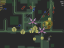
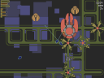
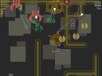
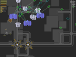
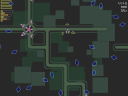
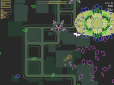

Garden of coloured lights

YOU ARE BORN INTO SPRING...
Garden of coloured lights is an old school 2D vertical shoo-em-up with some innovative elements. Innovative graphics, soundtrack and game concept. The game itself is very challenging and as you progress, you will understand that you are dealing with a true piece of art...

THE SUN IS HIGH ABOVE...
It is free, open source software. It is released under GNU GPL license v3 which means that it is not only free of charge, but you may also download the source code and play with it.

AUTUMN IS THE WINDING DOWN...
Garden of coloured lights depends only on allegro library, a multiplatform game programming library. Thanks to that, you can play Garden of coloured lights on Linux, Windows as well as on other systems that have allegro installed.

NO NEW LIFE WITHOUT DEATH...
It is not an easy game, so you will need some skill and patience... And maybe you will appreciate the possibility to use a joystick.
And yes, it is actually possible to get to stage 4 :-)

THE CYCLE IS RENEWED...
Download tarballs and Windows installers here, see the project page here and ENJOY!
